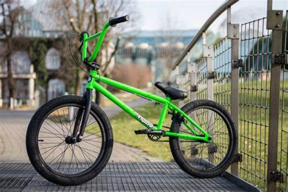

Що таке BMX-MTB
Є багато різних велосипедів для різних задач.
Ми розбираємо екстримальні десципліни тому велосипед повинен теж бути таким.
BMX (Bicycle Moto Cross (X)). У 60-х роках ці велосипеди розроблялись як імітація мотоциклу для мотокросу, щоб розвивати певні навички. Згодом всі зрозуміли, що на них легко робити трюки, і BMX почав розвиватись як окремий вид спорту.

Гірські велосипеди, або MTB (англ. Mountain bike — маунтинбайк) — призначені для їзди по бездоріжжю. Вперше велосипеди цього класу з'явились на початку 70-х рр. у США, у 80-х почалось серійне їх виробництво, у 90-х вони заполонили весь світ.
Ще є дисципліни катання MTB:КРОС-КАНТРІ (XC)
Будуть корисні потоотводящее білизна і одяг, велоперчатки, а від сонця і несанкціонованого попадання мухи в око врятують окуляри з комплектом лінз для різного часу доби. Невеликий рюкзак з гідросистемою незамінний в сонячні дні, крім того, туди можна покласти невеликий насос, запасну камеру і енергетичний батончик.
ОЛ-МАУНТІН (ALL-MOUNTAIN)
Назва говорить сама за себе (All Mountain в перекладі з англійської - "призначений для катання по всіх видах гір"). Це - універсальний велосипед, він важче, ніж XC-шний, але і більш надійний. Спуск, підйом - вам скрізь дорога. Ви хочете спробувати все? Пробуйте! Звичайно в цьому стилі використовуються велосипеди з міцною рамою і легкої навішуванням, тому кінцевий вага не повинна перевищувати 14 кг. Такі байки використовують в багатоденних марафонах, тому зима, проведена в спортзалі, буде непоганою підмогою для велосипедиста, який хоче катати All-Mountain. З аксесуарів - все те ж саме, що і для XC, плюс трохи легкої захисту у вигляді наколінників, і велоперчаток з довгими пальцями.
АПХІЛЛ (UH)
Тут все просто: ви повинні піднятися вгору по схилу з максимально можливою швидкістю (uphill - по-англійськи значить "вгору по горі"). Робота йде на знос, тому велосипед повинен бути максимально легкий - до 10 кг в самий раз. Проблема вибору - хардтейл або двухподвес - вирішується на рельєфі: якщо рельєф рівний і більш гладкий, то тут сильніше виступить хардтейл, якщо на ньому багато купин і інших нерівностей, на яких заднє колесо хардтейла буде втрачати зчеплення, сильніше виявиться Full Susp, або двухподвес. Захист і інші аксесуари не обов'язкові, все кидається в топку зменшення ваги. Відчуйте себе підкорювачем найкрутіших вершин!
ДАУНХИЛЛ (DH), АБО ШВИДКІСНИЙ СПУСК
Амплітуди і швидкість, обриви і прольоти, приземлення, крутий віраж, політ в нікуди ... О, ви ще живі? Тоді гори - це ваша стихія! Ін'єкція адреналіну в серце чекає кожного на вершині!
Назва цієї велосипедної дисципліни взято з гірськолижного спорту та повністю описує завдання - з'їхати з гори як можна швидше. Тут допоможе велосипед з двома амортизаторами і міцною навішуванням, вагою не більше 20 кг (вага тут так само важливий, як і в XC). На легких, але міцних байках мотоциклетного типу "батьки" цієї дисципліни можуть перестрибнути до трьох серій трамплінів одним наскоком.
DH-велосипед по-справжньому важкий: катати на ньому просто так, а тим більше в гору, представляється досить проблематичним заняттям. Тут нам на допомогу приходять гірськолижні курорти з крісельного підйомника, де влітку шикуються спеціальні траси для велосипедистів. Не треба брати з собою воду і запасні камери (все це повинно чекати вас внизу). Якщо ви відволічетеся під час заїзду, то бій буде програно - в DH боротьба йде на долі секунди. На трасі вам більше допоможуть шолом із захистом підборіддя (full face), окуляри-маска, захисний панцир, наколінники з захистом гомілки, рукавички з захисними пластинами, а в деяких випадках і мотоботи - спеціальні чоботи, зібрані з ударостійкого пластику. І нехай будуть з вами сила, контроль і стійкість!
З цієї дисципліни вийшли кращі екстремали, прізвища яких входять у верхні рядки всіх МТБ-рейтингів.
Є дисципліни катання для BMX:В процесі еволюції, до сьогоднішнього дня виокремилось декілька основних напрямків BMX катання: стріт (street), парк (park), дьорт (dirt), флетленд (flatland), рейсинг (racing).
Стріт – катання по вулицях, виконуючи трюки на архітектурних елементах (перили, парапети, сходи, стіни, підкати).Все залежить від фантазії райдера.
Парк – катання по спеціально облаштованому майданчику з різними типами фігур, та виконання на них трюків.
Дьорт – стрибки на серії спеціальних земляних трамплінів з радіусним вильотом, та виконання під час польоту трюків.
Флетленд – катання на плоскій поверхні з виконанням фігурного балансування на велосипеді.
Рейсинг – має ту ж саму суть що і мотокросові перегони, лише тут використовуються BMX. Саме від цього напрямку і почали розвиватись інші стилі.
| BMX колеса | MTB колеса |
| 16 дюймів колеса | 24 дюймів колеса |
| 18 дюймів колеса | 26 дюймів колеса |
| 20 дюймів колеса | 27.5 дюймів колеса |